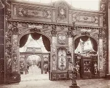

O Florescimento Cultural Burguês
A Belle Époque (Bela Época) foi um período de cultura cosmopolita, avanços tecnológicos e euforia que tomou conta da Europa entre o fim da Guerra Franco-Prussiana (1871) e o início da Primeira Guerra (1914).
Os valores liberais defendiam o livre mercado, o individualismo e a crença de que a civilização europeia havia atingido o ápice do desenvolvimento. No entanto, essa aparente paz escondia uma profunda desigualdade social e a exploração imperialista nos continentes africano e asiático.
1. A Euforia Tecnológica e as Grandes Exposições
Paris tornou-se o centro do mundo iluminado pela eletricidade. O surgimento do cinema, dos automóveis, do telefone e dos grandes cafés moldou o estilo de vida de uma burguesia triunfante. A crença no progresso científico linear fazia parecer que as grandes mazelas da humanidade seriam resolvidas pela ciência.
As Exposições Universais serviam como vitrines desse triunfo ocidental, celebrando invenções e exibindo as riquezas extraídas das colônias como troféus de uma suposta missão civilizatória.

O Palácio da Eletricidade na Exposição Universal de 1900: Paris celebrando o ápice da modernidade burguesa.
2. A Paz Armada: O Outro Lado da Moeda
Por trás das cortinas de veludo dos teatros e do otimismo liberal, as potências europeias sabiam que o equilíbrio geopolítico era frágil. Esse período de aparente tranquilidade ficou conhecido também como **Paz Armada**.
- Alianças Secretas: O medo mútuo fez com que as nações costurassem blocos de defesa mútua (Tríplice Entente e Tríplice Aliança). Se um fio fosse puxado, todo o continente cairia.
- Imperialismo e Racismo Científico: O luxo europeu era financiado pela violência brutal no continente africano e asiático, justificado por teorias pseudocientíficas que pregavam a superioridade do homem branco.
Vídeo Complementar: O que foi a Belle Époque?
Entenda em detalhes como funcionava a mentalidade da sociedade europeia antes da grande ruptura de 1914:
A Belle Époque provou ser um sonho dourado construído sobre um barril de pólvora. Os valores liberais e o otimismo exacerbado na ciência não evitaram a catástrofe; pelo contrário, forneceram as ferramentas industriais para tornar o iminente conflito o mais mortal que o mundo já vira até então.